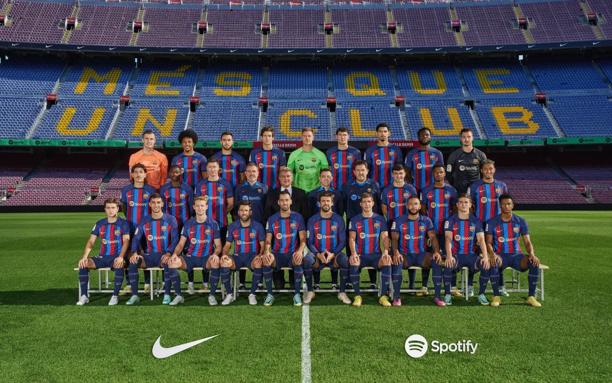
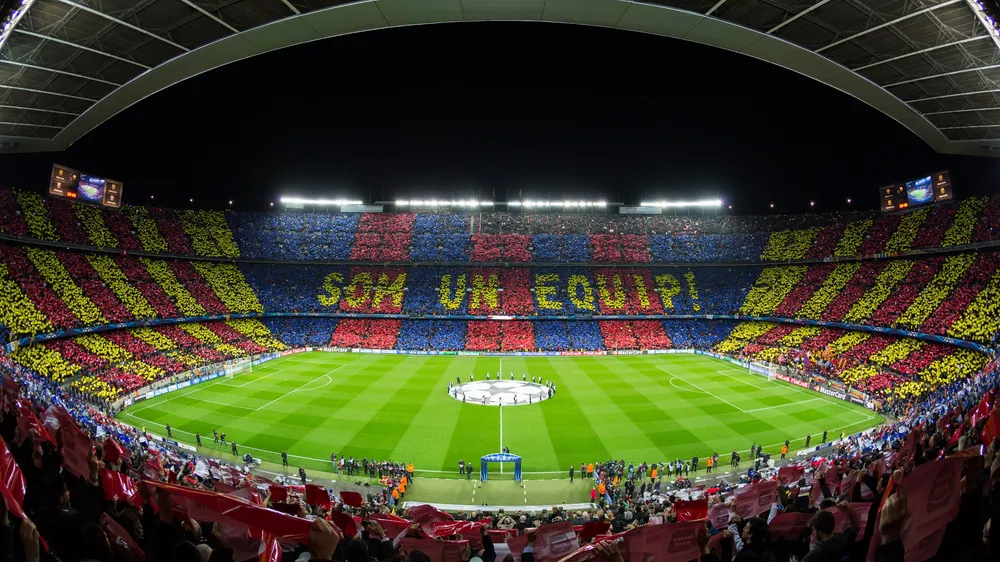

Més que un club (클럽 그 이상)
유럽 축구 역사상 최초로 6관왕과 2회의 트레블을 달성한 클럽이며 코파 델 레이 최다 우승 팀
역사
FC바르셀로나는 1899년 주안 감페르에 의해 창단된 스페인의 축구 클럽이다. FC바르셀로나는 스페인 내전 시기부터 이어진 역사적 풍파와 혼돈을 바르셀로나 시민과 함께 거쳐온 클럽이기 때문에 지역 열성팬들의 팀 충성도가 굉장히 높다. FC바르셀로나는 구단주가 구단을 창설하면 그에 맞춰서 팬들이 생겨나가는 일반적인 방식이 아닌 세계 최초로 협동조합 형태로 운영되는 시민구단이다. 이에 축구팬들이 자발적으로 자본을 출자하여 구단을 만들어서 운영하는 방식으로 운영되고 있으며 구단의 회장까지도 6년마다 한 번씩 팬들의 투표를 통해서 선출하고 있다. 투표권이 주어지는 자격은 가입 경력 1년 이상, 18세 이상이라면 누구나 6년마다 한 번씩 치러지는 클럽 회장 선거에서 투표를 행사하면서 회장을 선출할 권리를 가질 수 있다. 단, 회장 출마는 카탈루냐인만 가능하다. FC 바르셀로나는 창단 초기부터 강호로 활약했었지만 아픈 과거가 있는데 1930년대 스페인 내전이 발생하였고 카탈루냐어 사용 자체가 금지되어 Futbol Club Barcelona(FCB)였던 팀 명이 강제로 Club de Fútbol Barcelona(CFB)라는 명칭으로 바뀌게 되었다. 그리고 이러한 암흑기를 거친 후 1970년대 스페인 정부가 민주주의 시대로 접어들면서 모든 지방의 언어 사용이 자유화 됨에따라 팀의 로고를 FCB로 바꿀 수 있게 되었다. 그리고 그 이후 첫 UEFA 챔피언스 리그 우승은 1992년으로 명성에 비해 늦은 편이었지만 2006년부터 UEFA 챔피언스 리그 우승을 4회나 하였다. 또한 단일 대회 우승이 아니고 스페인 최초이자 유일 트레블 2회, 6관왕, 5관왕 2회도 달성하였다. FC바르셀로나는 1990년대 중반부터 2000년대 중반까지의 10년간 이어진 축구 춘추전국시대를 깨고 유럽 축구의 헤게모니를 구축한 클럽 중 하나로서 2000년대 중반부터 2010년대 중반까지의 FC바르셀로나는 축구 역사상 최고의 팀 중 하나라 불려도 손색이 없을정도였으며 유럽 축구사에서 가장 강력했던 왕조 중 하나로 일컬어지고 있다. 2005-06시즌부터 2014-15시즌까지 10시즌간 UEFA 챔피언스 리그 4회 우승, 라리가 6회 우승(평균 승점 85점), 코파 델 레이 3회 우승, 두 번의 트레블 등 엄청난 모습을 보여주었다. 그리고 1928년 라리가 출범 이래 단 한 번도 강등되지 않고 리그에서 뛰고 있다.
Camp Nou (캄 노우)
FC 바르셀로나의 홈 경기장으로 스페인 카탈루냐주 바르셀로나에 위치하고 있다. 이름은 카탈루냐어로 새로운 경기장(new ground)라는 뜻이며, 바르셀로나의 공식 홈페이지에 따르면 좌석 수는 총 99,354석으로 세계에서 가장 큰 축구 전용 경기장이다. 캄 노우는 스페인내에서 가장 큰 경기장이지만 경기장이 위치한 카탈루냐 지역이나 구단 자체가 독립 성향이 강해서 스페인 축구 국가대표팀의 경기장으로 거의 쓰이지 않는 특징이 있다. 2022년 3월 15일 스포티파이가 FC 바르셀로나와 3억 1천만 달러에 경기장 명명권을 인수하기로 합의했다고 발표함에 따라 경기장 이름은 Spotify Camp Nou로 2022년 7월부터 변경되었다.
꾸레 (Culér)
FC 바르셀로나의 팬들은 '꾸레(Culér)'라고 불리는데 1910년대 홈 구장에 많은 팬들이 몰리자 자리가 부족해졌고 그럼에도 경기를 놓치기 싫었던 팬들이 지붕이나 담벼락에 걸터앉기 시작하면서 경기장 주변을 지나가던 사람들이 그 엉덩이들을 보고 엉덩이(Culo)를 내밀고 있는 사람을 뜻하는 '꾸레'라는 별명을 지어주었다.
Més que un club
FC바르셀로나의 창단 모토는 클럽 그 이상(Més que un club)이다. 이는 카탈루냐어이며, 스페인어로는 'Más que un club'에 해당한다. 창단 모토의 뜻은
'일반적인 축구 클럽을 벗어나서, 다른 사회적인 분야에서도 모범적이며, 상징적인 존재가 되는 클럽을 지향하자'
라는 뜻이다. 실제로 많은 카탈루냐인들에게 FC바르셀로나는 단순한 축구 클럽을 넘어 하나의 상징으로 여겨져 왔다.라 마시아 (La Masia)
라 마시아는 카탈루냐어로 농장이라는 뜻의 단어로서 어린 선수들을 키워낸다는 의미를 담고 있다. 1988년부터 1996년까지 8년간 총감독을 역임했던 요한 크루이프의 철학이 강하게 묻어있는 라 마시아는 티키타카와 토탈 사커를 기본으로 하며 이는 유소년 선수들이 1군 선수단에 합류했을 때 적응 기간을 최소화 하기 위함이다. 라 마시아는 뛰어난 선수들을 배출한 것으로 유명하며 무엇보다도 리오넬 메시를 배출한 곳으로 잘 알려져 있다. 전 세계의 많은 축구 꿈나무들이 가장 가고 싶어하고 전 세계의 엄청난 축구 유망주들이 모인 곳이다. 우리나라에도 라 마시아 출신으로 이승우, 백승호, 장결희가 있었다.